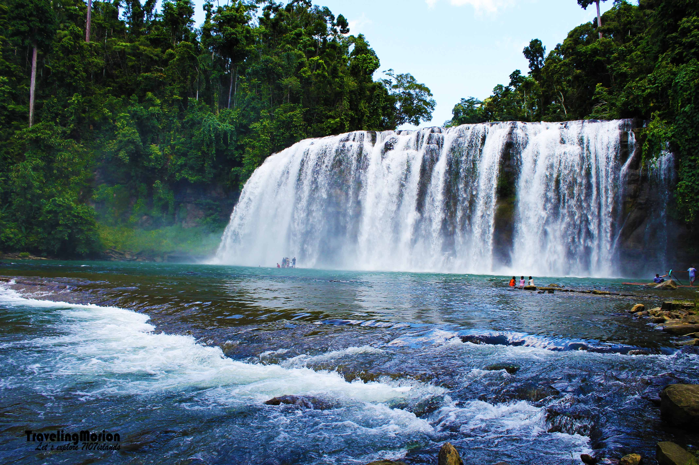

Tinuy-an Falls
Tinuy-an Falls is a majestic multi-tiered waterfall located in Bislig, Surigao del Sur. Standing at 95 meters wide and 55 meters high, it is often called the "Niagara Falls of the Philippines." Its wide curtain of water cascading over three levels is a breathtaking sight, especially in the morning when rainbows often form in the mist. Surrounded by lush greenery, Tinuy-an Falls is a perfect spot for nature lovers, offering opportunities for swimming, bamboo rafting, and photography in a serene, picturesque environment.
Reviews and Ratings
Michael James
Nice place. Very worth your time if you want to chill and unwind.